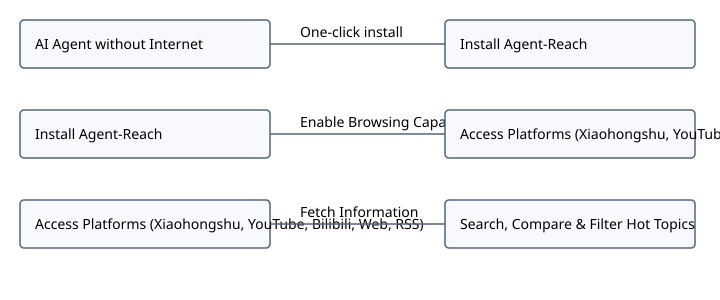

# Agent Reach Overview [00:00-00:08] ## Core AI Functionality [00:00-00:04] ### Searching Content Platforms [00:00-00:02] - **Internet Capabilities**: Equips AI agents with real-time web access instead of merely generating copywriting. - **Platform Penetration**: Allows AI to autonomously search and extract information across Xiaohongshu, Bilibili, and YouTube. - **Popularity**: Has gathered over 45.4K stars on GitHub. ### Cross Platform Comparison [00:02-00:04] - **Automated Research**: Given a topic, the AI searches notes, reads URLs, and compares findings across platforms. - **Agent Integration**: Delivers one-click internet connectivity for AI agents. - **GitHub Recognition**: Ranked as the #1 Repository of the Day on GitHub Trending. ## Creator Value and Platforms [00:04-00:08] ### Hotspot Content Screening [00:04-00:06] - **Creator Value**: Pre-screens and filters trending topics to accelerate workflow for content creators. - **Simple Command**: Can be installed easily via a single request prompt. ### Supported System Platforms [00:06-00:08] - **Platform Coverage**: Supports web pages, YouTube content, and RSS feeds. - **Configuration Options**: Provides structured table settings for seamless platform integration.
